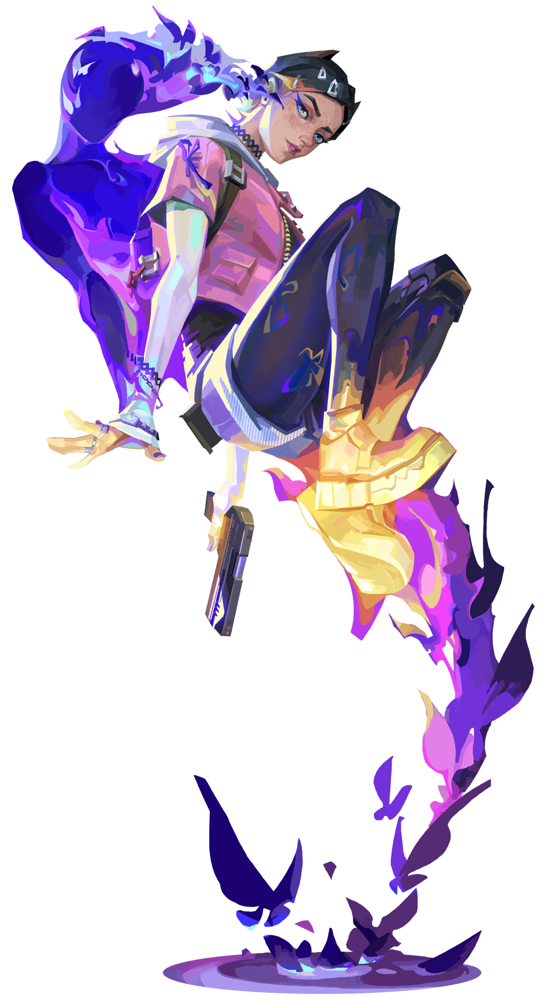
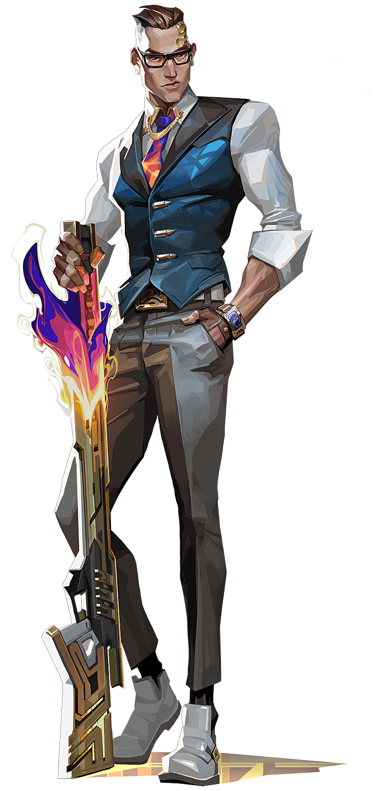
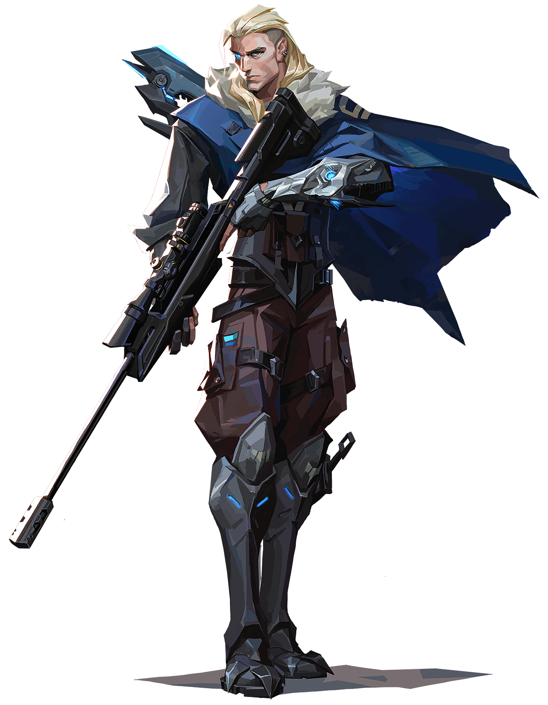

Map // 01
Abyss
アビスについては、苦手だと感じているかもしれません。
しかし勝率で見ますと50%あり、最も負けているマップではありません。
ただし、ヘッドショット率などの個人の数字は少し沈みがちです。
次にアビスが来ましたらクローヴで入り、スモークを出す場所を2つだけ決めておいてください。
決めるのは試合開始前で構いません。
考えることが減る分、撃ち合いに集中しやすくなります。
勝率（メイン） 50% ／ 感覚ほど負けてはいません

記録を確認し、次の試合に向けた練習をご案内します。
接続すると、ご本人のコーチングを表示します。
データを確認しています。
KESO PLAYのKP残高は変更されません。接続コードの再入力は不要です。
Discordの /valo coach から「Activityを開く」を押し、KESO PLAYの「コーチ」を選ぶと、Discordの本人認証で接続できます。48桁コードの入力は不要です。同じブラウザーですでにKP口座へ接続済みの場合も自動で認証します。
通常ブラウザーで自動接続できない場合だけ、/valo status の接続コードを使えます。コードは保存しません。
詳細診断・目標：本人のみ
ご本人の診断をコピーできます。認証情報・試合ID・PUUID・相手の名前は含めません。
本人に確認済みのアカウントだけの進捗です。APIに残っていない過去試合は取得できません。
昨日の試合は、両アカウントともすべて確認しました。
本日は練習を1つだけご用意しました。
すでにできていることを、次の試合でも再現するための練習です。
10分ほどお時間をいただけますと幸いです。
試合データはすでに届いており、分析も完了しています。
あとは本日の練習を実施し、次の試合で試していただく段階まで来ています。
最も印象に残ったのは、ラウンド開始直後に最初に敵と接敵する回数が多い点です。
1試合あたり平均で約2回、ご自身から最初の流れを作りに行っています。
うまくいったキルでは、当たる前からクロスヘアが頭の高さに置けていて、角の手前で一度止まれていました。
惜しかった場面は、走ったまま覗いて初弾がずれてしまったところです。本日はその準備の部分だけを、練習で先に潰しておきます。
1試合で最初に敵と当たった回数の平均です。
メインアカウントのK/Dです。銃の土台は崩れていません。
目的は、取れたキルの前にあった準備を体に思い出させることです。新しいことを覚える練習ではありません。
疲れている日でも、タイマーを押してブロック1から始めれば、最後までそのまま流れるように作ってあります。
難易度はダイヤモンド帯を前提に設定しています。イージーのボットは使用しません。
上のボタンで時間を合わせてから開始してください。音は鳴りません。
50体をこの順番で倒せれば終了です。3分で届かなかった場合は、止まってから初弾を当てられた回数が前回より増えたかを確認してください。
順位は追わなくて構いません。守っていただく決め事は1つだけです。
4分間この決め事を守れれば終了です。終了後、置けていた接敵が何回あったかを大まかに思い出していただければ十分です。
3つの場所で3回ずつできましたら、練習はすべて終了です。ここまででちょうど10分になります。
次の試合が終わりましたら、下の3点を確認します。
すべてを完璧にする必要はありません。最初の3ラウンドだけでも意識していただければ、変化は拾えます。
承知しました。次の試合では最初の3ラウンドを確認し、止まれていたキルがどれくらい増えたかを数えて並べておきます。
本日の分は、すべて合わせても10分で終わります。長く練習することよりも、決めた順番をそのまま一度通すことの方が合っていると考えています。
あわせてマップについてもお伝えします。感じている苦手意識と、実際の数字が少しずれている点がありました。

アビスについては、苦手だと感じているかもしれません。
しかし勝率で見ますと50%あり、最も負けているマップではありません。
ただし、ヘッドショット率などの個人の数字は少し沈みがちです。
次にアビスが来ましたらクローヴで入り、スモークを出す場所を2つだけ決めておいてください。
決めるのは試合開始前で構いません。
考えることが減る分、撃ち合いに集中しやすくなります。
勝率（メイン） 50% ／ 感覚ほど負けてはいません
サミットは4回実施して、まだ勝利がありません。
ただ、個人の数字自体は悪くありません。
撃ち合いが原因で負けているとは考えていません。
試合終盤で、人数有利な場面を落としてしまっている傾向があります。
次にサミットが来ましたら、終盤のラウンドだけを一緒に見返せば十分です。
すべてを見直す必要はありません。
戦績（メイン） 0勝 4敗 ／ 個人の数字は出ていますので、ご心配はいりません次の試合で迷いましたら、角に差し掛かるたびに完全に止まってから覗くことだけを思い出してください。
それだけで、本日の練習は意味があったことになります。

ソーヴァについても率直にお伝えします。ソーヴァを使用した際はACSが200程度まで落ちており、普段の230近くから下がっていることが数字でも出ています。ご自身でも感覚としてお分かりかと思いますが、リコンに意識が向くと銃の方がどうしてもおろそかになります。使用する場合は、リコンを出すタイミングをラウンド開始前に決めておいていただけますと助かります。
数字の出典：tracker.gg の公開プロフィール（V26 Act 6 コンペティティブ、2026-11-19 に確認したもの）です。試合数が少ないマップの数字は、傾向としてご覧ください。課題の P082、P097、P010 は KESO COACH が実際に選んだ組み合わせで、合計は10分になっています。エージェントとマップの画像は Riot Games の公式アートで、valorant-api.com 経由で取得したものです。
今日の2件は、データが揃い次第ここに表示されます
進み具合： 試合 ✓ → 分析 ✓ → 今日の2件（いま）→ コンペ → フィードバック ／ 1周したら、また分析から回ります。分析の中身（弱みと強み）は、この下の2枚です。
本人の記録から選んだ、今日の優先課題です
本人の記録をもとに選んでいます
座学のテーマは日替わりで、現在のコンペプール全マップ・全エリアを順に回します。今日の対象は、上の見出しの通りです。
承知しました。アップと座学が終わったらコンペへ。次のコンペでは、トレードが取れた回数と、人数有利を勝ちに変えられたラウンドを数えて並べておきます。
マップは絞りません。コンペプール全体を日替わりで回し、どのマップが来ても同じ型で戦える状態を作ります。苦手マップだけを避ける練習はしません。
マップ別の数字とサンプル状況は、数字の画面で全7マップ分を確認できます。
エージェントも絞りません。ご本人の広いプールは強みです。1体に固定せず、ロールごとに「そのロールの仕事」を鍛える形で回します。
どのキャラでも共通の宿題は同じです。スキルを持ったまま倒れないこと、コールしながらでも撃ち合いの型を崩さないこと。この2つが全ロール共通のプロ基準です。
コンペが終わったら開く画面です。結果の速報、根拠のある分析、VODで見る場所の指定、そして次回の2件への接続までを、この順番で確認します。
結論：対象は直近の完了試合です
対象は、データが揃った最新の完了試合です。記録が空の試合は評価から外し、前の完了試合に自動で差し替えますので、ここが行き止まりになることはありません。
「未取得」は、値がまだ届いていない項目の標準表示です。空白にはしません。届き次第、同じ場所に数字が入ります。評価の土台となる合算分析は、次のカードの通りです。
結論：見るのは分かれ目の1〜2場面だけです。下の指定と優先順を目印に、録画から該当場面を探してください。
ここを1度見てください — 未取得
この試合で検出された分かれ目の判定理由がここに入ります。データが届いていない間は「未取得」と表示し、場面を推測で作ることはしません。届き次第、勝率の振れ幅が最も大きい場面から順に表示します
はい、指定します。ただし、コーチは ご本人ご本人の録画そのものは見られません。ですので形は「録画を見て感想を言う」ではなく、試合データから、録画の中で止めるべき場面を指定するものになります。ご自身の録画（リプレイ／録画ファイル）を開き、下の優先順と分かれ目判定に沿って、指定された場面だけをご確認ください。
全部を通しで見返す必要はありません。最初に見るのは、分かれ目として指定された1〜2場面です。その中で、ご自身のデス場面だけを止めて確認します。それが、この案内の見方です。
優先の根拠は、合算データで繰り返し出ている傾向です。探す場面は、トレードと終盤に寄せます。
該当ラウンドが複数ある日は、上の順に3場面までで止めてください。3場面を超えて見続けることは、今日の課題にはしません。ラウンド番号が「未取得」の間は、上の3つの種類を目印に、ご自身の録画から該当場面を探してください。
カテゴリで探すだけでは、まだ粗い指定です。もう一段進めて、試合データそのものから「ここが分かれ目だった」と言える場面を検出し、ピンポイントで指すのが、この判定です。
検出の前提です。試合データには、キル位置・使用武器・ラウンドごとの人数状況・経済（購入内容と残金）・設置イベント・ウルト使用が含まれます。コーチはこれらを組み合わせて、下の7つの基準に当てはまるラウンドを自動で拾います。当てはまった中から、勝率の振れ幅が大きい順に並べ、最も大きい1〜2場面を「ここを1度見てください」として指定します。
判定基準 — この7つで検出します。各基準の右側は、この試合での検出結果です。該当がなければ「該当なし」、データが届いていなければ「未取得」です。
見方は変わりません。分かれ目として指定された場面も、まずは1度だけ止めてご覧ください。何度も巻き戻す必要はありません。止めたら、次のステップ「原因」の「デスだけレビュー」と6点チェックで、その場面の中のご自身のデスを確認してください。
結論：原因探しは自分のデスだけです。下の3点と照らし、6点チェックで当てはまった1点が、次の対策になります。
1試合だけの数字で結論は出しません。合算データで繰り返し出ている傾向と重なるかどうかを見て、初めて課題として扱います。現在の傾向は、ホームの弱み・強みと同じものです。
止めたデス1件ごとに、この6点だけを確認してください。調査レポートのVOD自己レビューチェックリスト（コーチ資料に基づく【意見】）の6点です。
6点のうち当てはまったものを、次のカード「対策」へ渡してください。全部を直そうとせず、繰り返し出た1点が次回のアップと座学の選定理由になります。分かれ目として指定された場面で当てはまった点は、とくに重みを持ちます。座学で覚えた型と見比べるのは、設置後のラウンドで有効です。
結論：課題リストは増やしません。繰り返し出た1点だけが、次回の2件の選定理由になります。
VODの6点チェックで繰り返し出た1点は、次の分析（CHECK）に記録として戻り、次回の「本日のアップ」と「本日の座学」の選定理由になります。別の課題リストは作りません。やることは、次回も2件だけです。
データが不足して評価できない日は、この画面ではなく「データ不足」の標準案内が表示され、評価できる直近の試合へご案内します。案内の型は「状態の型」の画面にまとめています。
本人の記録から選んだ、今日の優先課題です
結論：やることは20分・1件だけ。タイマーを回して、手順に沿って進めてください。
記録は次回の分析（CHECK）に渡され、次のアップと座学の選定に使われます。書くのは効果のメモだけで十分です。
記録を受け付けました。この内容は次回の分析に渡ります。
記録を保存できませんでした。接続を確認して、もう一度お試しください。
アップは毎日1件だけです。内容は本人のデータで日替わりになりますが、件数を増やすことはしません。マップとエージェントは当日のプール全体が対象で、特定の組み合わせに固定しません。
本人の記録をもとに選んでいます
対象エリアを確認しています
結論：覚えるのは今日の要点1件だけです。要点と確認手順は、下の折りたたみにあります。
記録は次回の分析（CHECK）に渡されます。座学の巡回は、この記録をもとに未実施のマップ・エリアから順に選ばれます。
確認を受け付けました。お疲れさまでした。今日の座学は以上です。
記録を保存できませんでした。接続を確認して、もう一度お試しください。
座学のテーマは全マップ・全エリアを順に回します。特定のマップやエージェントに偏ることはありません。マップごとに事前に決めた出し分け（プリセット）がある場合は、その内容が優先されます。
登録アカウントの合算記録です。数字が足りない項目は、推測で埋めずに「サンプル不足」「未取得」と明示します。それがこの画面の約束です。
結論：内訳は下の折りたたみにあります。弱みと強みの読みは、ホームの2枚のカードをご覧ください。
読み方：今日のアップと座学は、この数字と診断の傾向に基づいて選んでいます。数字が無い項目は、推測で埋めずに未取得と表示します。
サンプル不足のマップも、座学とローテーションの対象からは外しません。数字で断定しないことと、練習で扱わないことは、別の話です。
数字は本人の保存済み戦績から計算しています。試合数が少ない項目は傾向としてご覧ください。
チームの情報はホームには並べません。見るのは、この画面を開いた時だけです。既定の表示は常に本人で、他メンバーの画面へはメンバー切替から移動します。
結論：表示中は本人のみです。他メンバーは未取得のため、数字も評価も出しません。
メンバー切替の既定は自分です。他メンバーの画面でも構成は同じで、今日の2件・弱みと強み・数字が、そのメンバーのデータで表示されます。
集計に必要な人数分のデータが揃っていないため、チーム指標はまだ表示できません。揃い次第、同じ場所に数字が入ります。個人の数字をチームの数字として代用することはしません。
設定項目はホームには置きません。変更が必要な時だけ、この画面を開いてください。現在の同意は全員ONの扱いが既定で、ご本人はいつでもここからOFFに戻せます。
結論：変更が必要な項目だけ開いてください。同意と通知の変更は、この下にある共有・チーム・通知の各欄が正の記録です。
連携が切れた場合は、空白の画面ではなく「未接続」の案内が表示されます。案内の型は「状態の型」の画面にまとめています。
目標ランクは、この下にある「目標」欄で設定できます。コーチの選定は、その目標に沿って行われます。選ばなくても、今日の2件は通常通り用意されます。
データが無い、届いていない、失敗した。どの状態でも、次に取る行動が1つは分かる形にします。以下が全画面で共通の標準形です。
直近の試合だけでは評価に必要な記録が揃っていませんでした。評価できる直近の試合の分析を代わりに表示しますので、そちらをご覧ください。
合算分析（数字の画面）を表示します。評価が空の試合は対象から外れています。
型の決まり：理由は1〜2文で簡潔に。必ずフォールバックのボタンを1つ置き、行き止まりにしません。空の試合は評価対象から外すことが前提です。
値がまだ届いていない項目は、場所を空けずに「未取得」と表示します。0や推測の数字で埋めることはしません。
型の決まり：ラベルは残し、値の場所に「未取得」。届き次第、同じ場所に数字が入ります。
読み込み中は、表示される形に近い骨組みだけを先に出します。画面全体を真っ白にはしません。
型の決まり：骨組み表示のみ。読み込みが終わるまで、他の画面への移動は妨げません。
データの取得に失敗しました。通信の状態をご確認のうえ、もう一度お試しください。
型の決まり：何が起きたかを1文で。再試行ボタンを必ず置き、失敗を画面の終わりにしません。
戦績がまだ連携されていません。連携が完了すると、分析と今日の2件が自動で用意されます。
型の決まり：手順は番号付きで具体的に。連携前でも、連携方法だけは最後まで読めるようにします。
このメンバーのデータは未取得です。数字も評価も表示されません。取得が完了したメンバーから、順に表示されます。
型の決まり：未取得のメンバーについて、推測の数字や評価を出すことはしません。切替の既定は常に対象ご本人です。